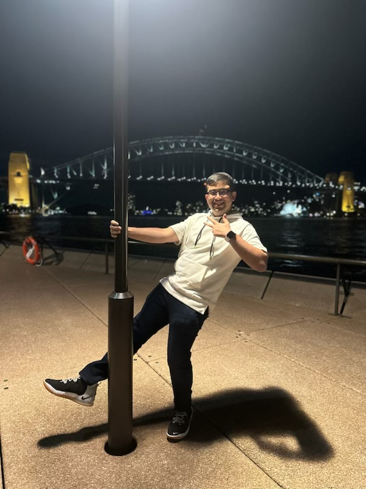

Hello! I am Ved Khanolkar: an ambitious and entrepreneurial first-year student, studying Mechatronics Engineering and Computer Science at the University of New South Wales. Having been a technology enthusiast since time immemorial, I have always been passionate about artificially intelligent systems and the software-hardware interplay. I believe they have the potential to revolutionise society for the better, and I aim to be at the forefront of this change. As such, I am currently learning the basics of web development and programming languages such as HTML, CSS and Javascript. In fact, I have drafted this resume using my newly learnt HTML skills.
Hence, I constantly strive to learn and improve myself, collaborating with people across all disciples, and building a solid set of foundations before I embark upon my own entrepreneurial journey. However, I am also a strong believer in the principle of giving back, which is why I currently work as a Science tutor at Matrix Education. I strive to utilise my HSC experience to mentor high school students into achieving their academic goals.
